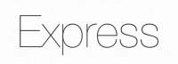
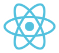
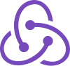
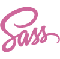

Hello, I'm Desiree Morris
Full Stack Web Developer With an Eye For Design
I first taught myself how to code using HTML and CSS when I was 12 years old after my grandmother introduced me to web development in the 90s. I used it mostly as a hobby as I met people in chat rooms and participated in web design and graphic design challenges. In 2004 I went to Western Carolina University and majored in Entrepreneurship and Graphic Design
At Western Carolina University I landed my first job as a Junior Web Designer for the University’s Website. I also became the go to person to design and maintain student organizations, and department specific websites. After 3 years I left that job and transferred to a different school. I graduated with my bachelor’s degree in biology and began working in the medical field. During that time I went back to building websites for friends and family as a hobby.
In 2018, I decided to leave my medical career behind and get serious about my first love, Web Development. For a two years I freelanced for small businesses. During that time I decided I wanted to learn more and become a Full Stack Web Developer. I began looking for ways to increase and modernize my skill set when I decided to enroll in Lambda School.
Lambda School is a 9 month Computer Science & Software Engineering Academy. I enrolled in the Web Development & Computer Science track that provided me with an immersive hands-on curriculum.
The following projects are a mixture of Lambda School projects, personal projects, and experiments that showcase my Full Stack Web Development skills as well as my Web Design skills.
Featured Projects
Party Planner
User Interface Project.
HTML5, CSS3, LESS, JavaScript (ES6), GitHub, BootStrap
Built a simple and responsive marketing website for the party planner app which allows users to plan parties for their friends. Project completed with a team of 2 User Interface Developers and 4 days to plan and build. I was responsible for the design and development of the landing page and the navigation bar.
Foodie Fun App
Front End Project.
JavaScript(ES6), CSS3, React, Redux, Formik, Axios, Jest
Built an app that allows a user to save restaurants they’ve visited and add a review so that they can remember their experience. Project completed with a team of 5 Front End React Developers and 4 days to plan and build. I was responsible for state management, some design tweaks, and ajax management.
Droom
Back End Project.
React, GitHub, Sqlite, Postgres, Bcrypt, Json Web Token, Knex
Served as the Team Lead for a cross-functional team. Built the backend for an app that allows a user to swipe right to like a job listing and left to pass. Also allows a secondary user to create job listings and swipe right to like a potential employee and left to pass. Backend completed in 2 days, Project completed in 4 days to plan and build. I was responsible for building the entire backend as well as running daily standup meetings and managing the project through time management.
Connect Our Kids
Full Stack Project.
Google BigQuery, AWS Lambda, Serverless Framework, NodeJS, and React
Worked with a cross-functional team to build "Impact Dashboard", a green-field web application that solves a specific problem for social workers.
Tech Stack
I specialize in the S.E.R.N. stack. In addition to SQL, Express, React, and Node, I also have experience with the following technologies.

HTML

CSS

JavaScript
SQL
Express
React

NodeJs
Redux

Python
LESS
SASS
Ready To Work With Me?
There are two ways you can start working with me. Hire me to join a team in your company full time. Or partner with me on a new project to increase the visibility and efficiency of your business.